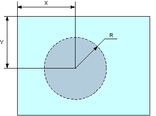
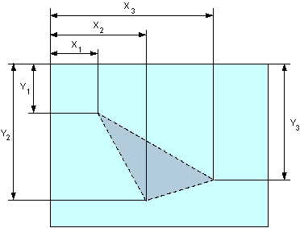

Атрибут coords
| Internet Explorer | Chrome | Opera | Safari | Firefox |
| 4 | 1 |
| Android | Firefox Mobile | Opera Mobile | Safari Mobile |
| 1 | 6 |
Атрибут coords применяется к ссылкам, которые располагаются внутри контейнера <object>. Совместно с атрибутом shape создаёт «горячую область», которая служит ссылкой. По своему действию похож на элемент <area>.
Синтаксис
<object usemap="#идентификатор">
<map name="идентификатор">
<a href="URL" coords="координаты">...</a>
</map>
</object>Значения
Набор координат определяется формой «горячей области», которая задаётся атрибутом shape. Отсчёт координат обычно ведётся от левого верхнего угла объекта или изображения и указывается в пикселях.
Для прямоугольника (shape="rect") задаются четыре координаты — X1, Y1, X2, Y2, как показано на рис. 1.

Рис. 1. Координаты для прямоугольника
Для окружности (shape="circle") задаются три координаты — координаты центра окружности (X, Y) и её радиус (R), как показано на рис. 2.

Рис. 2. Координаты для окружности
Для полигона (многоугольника) (shape="poly") последовательно указываются координаты каждой вершины (X1, Y1, X2, Y2, :), как показано на рис. 3.

Рис. 3. Координаты для полигона
Значение по умолчанию
Нет.
Спецификация
Каждая спецификация проходит несколько стадий одобрения.
- Recommendation (Рекомендация) — спецификация одобрена W3C и рекомендована как стандарт.
- Candidate Recommendation (Возможная рекомендация) — группа, отвечающая за стандарт, удовлетворена, как он соответствует своим целям, но требуется помощь сообщества разработчиков по реализации стандарта.
- Proposed Recommendation (Предлагаемая рекомендация) — на этом этапе документ представлен на рассмотрение Консультативного совета W3C для окончательного утверждения.
- Working Draft (Рабочий проект) — более зрелая версия черновика после обсуждения и внесения поправок для рассмотрения сообществом.
- Editorʼs draft (Редакторский черновик) — черновая версия стандарта после внесения правок редакторами проекта.
- Draft (Черновик спецификации) — первая черновая версия стандарта.
Особняком стоит живой стандарт HTML (Living) — он не придерживается традиционной нумерации версий, поскольку находится в постоянной разработке и обновляется регулярно.